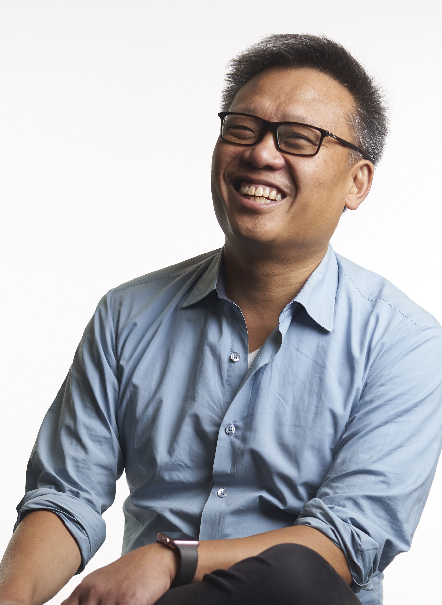
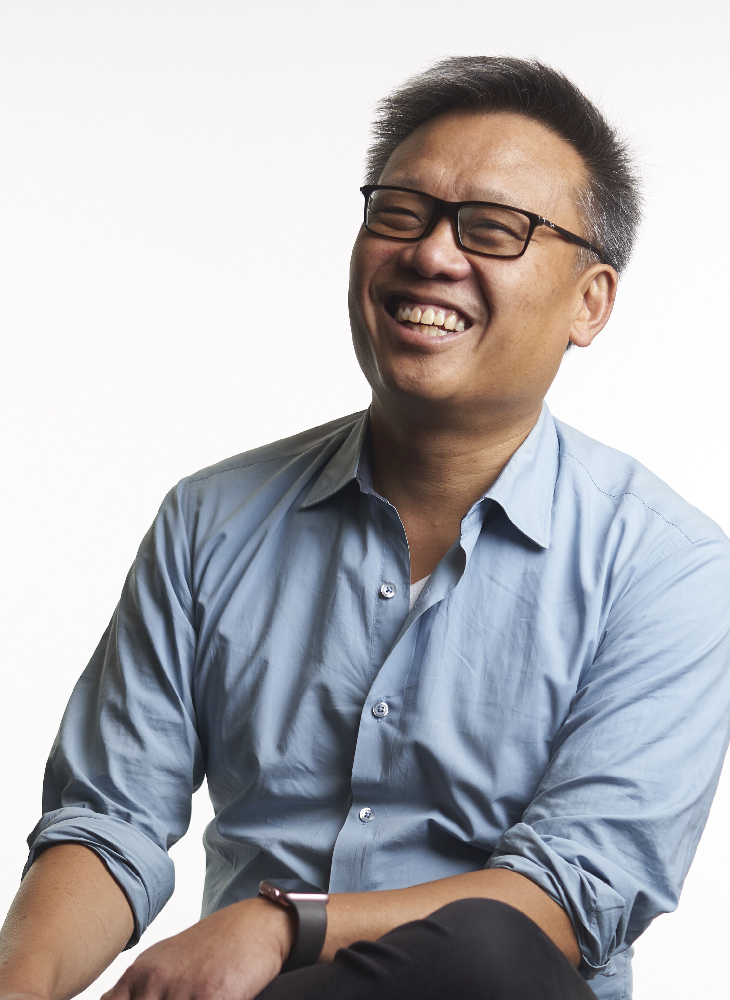

Principal Investigator

Wendell Lim, PhD
Byers Distinguished Professor
UCSF Department of Cellular and Molecular Pharmacology
Director, UCSF Cell Design Institute
Director, UCSF Center for Synthetic Immunology (NIH IOTN-i3 Center)

Wendell Lim, PhD
Byers Distinguished Professor
UCSF Department of Cellular and Molecular Pharmacology
Director, UCSF Cell Design Institute
Director, UCSF Center for Synthetic Immunology (NIH IOTN-i3 Center)
Lab Administrator
Lab Members
- Mikail Alejandro
- Ricardo Almeida, PhD
- Grace Baird
- Adrian Barrera-Velasquez
- Hersh Bhargava
- Harkiran Bhasin
- Carmina Blanco
- Oscar Campos, PhD
- Arsenia DeGuzman
- Josiah Gerdts, MD, PhD
- Jungmin Lee, PhD
- Pilar Lopez
- Alessio Mallozi, PhD
- Iain Martyn, PhD
- Alessandro Migliara, PhD
- Ben Ng
- Isiac Orr
- Lindsay Oshiro
- Philip Pauerstein, MD, PhD
- Devan Shah
- Chanelle Shepherd
- Nick Shin, PhD
- Sim Sidhu
- Milos Simic, PhD
- Riley Stockard
- Adam Stevens, PhD
- Yurie Tonai
- An Tran
- Don Wang, PhD
- Sarah Wasinger
- Yini Xiao, PhD
- Toshimichi Yamada, PhD
- Wei Yu, MD, PhD
- Cecilia Zhang
- Shaohua Zhang, PhD
- Robert Zhu
Lim Lab Alumni
-
Nishith Reddy, PhD
Graduate Student (2016-2024)
Subsequently: Postdoctoral Fellow, MIT (Lab of Feng Zhang)
-
Greg Allen, MD, PhD
Postdoc (2015-2023)
Subsequently: Assistant Professor, UCSF
-
Ki Kim, PhD
Graduate Student (2017-2023)
-
Jeremy Villafuerte
Specialist (2020-2023)
-
Kyle Daniels, PhD
Postdoc (2015-2022)
Subsequently: Assistant Professor, Stanford University
-
Rogelio Hernandez-Lopez, PhD
Postdoc (2016-2021)
Subsequently: Assistant Professor, Stanford University
-
Jason Duecker
Staff Research Associate (2019-2022)
Subsequently: Lyell Immunopharma
-
Wesley Mckeithan, PhD
Postdoc (2018-2020)
Subsequently: Scientist II, Maze Therapeutics
-
Aileen Li, PhD
Postdoc (2018-2020)
Subsequently: Principal Scientist, Lyell Immunopharma
-
Joseph Choe, PhD
Graduate Student (2014-2020)
Subsequently: Scientist II, Arsenal Bio
-
Maia Yoshida
Research Assistant (2018-2020)
Subsequently: Master’s Degree in STEM Education Student, King's College London
-
Geoffrey O'Donoghue, PhD
Postdoc (2014-2020)
Subsequently: Scientist, Cero Therapeutics
-
Jasper Williams, PhD
Graduate Student (2014-2020)
Subsequently: Scientist, ArsenalBio
-
Nicholas Frankel, PhD
Postdoc (2015-2019)
Subsequently: Scientist II, Senti Biosciences
-
Satoshi Toda, PhD
Postdoc (2015-2019)
Subsequently: Assistant Professor, Nano Life Science Institute, Kanazawa University, Japan
-
Ashley Koegel, MD
Postdoc (2017-2019)
Subsequently: Medical Director, Celgene
-
Vivian Garcia
Visiting Scholar (2018-2019)
Subsequently: Biological and Biomedical Sciences PhD Student, Harvard University
-
Nira Krasnow
Research Technician (2018-2019)
Subsequently: Medical Student, Harvard Medical School
-
Jonathan Brunger, PhD
Postdoc (2015-2019)
Subsequently: Assistant Professor, Vanderbilt University, School of Engineering
-
Joan Garbarino
Lab Manager (2009-2019)
Subsequently: Retired
-
Sarah Levinson
Postdoc (2016-2019)
Subsequently: Scientist, Kyverna Therapeutics
-
Igal Sterin
Research Technician (2015-2018)
Subsequently: Molecular Biology Ph.D. Student, University of Utah
-
Crystal Ghosh
Research Technician (2016-2018)
Subsequently: Research Associate, Calico Life Sciences
-
Jakub Rajniak
Postdoctoral Fellow (2016-2017)
Subsequently: Postdoctoral Fellow, Stanford University
-
Lukasz Bugaj
Postdoc (2014-2017)
Subsequently: Assistant Professor, University of Pennsylvania, Dept. of Bioengineering
-
Kole Roybal
Postdoc (2013-2017)
Subsequently: Assistant Professor, University of California, San Francisco, Dept. of Microbiology and Immunology
-
Isabel Kolinko
Postdoc (2015-2017)
Subsequently: Professur, Institute for Microbiology, ETH Zurich
-
Russell Gordley
Postdoc (2009-2016)
Subsequently: Synthetic Biology Group Leader, Senti Biosciences
-
Leonardo Morsut
Postdoc (2012-2016)
Subsequently: Assistant Professor, Dept. of Stem Cell Biology and Regenerative Medicine, University of Southern California
-
Amir Mitchell
Postdoc (2012-2016)
Subsequently: Assistant Professor, University of Massachusetts Medical School
-
Scott Coyle
Graduate Student (2009-2016)
Subsequently: Assistant Professor, UW-Madison
-
Levi Rupp
Postdoc (2014-2016)
Subsequently: Associate Director, Janssen Pharmaceutica
-
Krista McNally
Specialist (2010-2016)
Subsequently: Scientist, Chimera Bioengineering
-
Xin Xiong
Postdoc (2013-2015)
Subsequently: Lead Scientist, Agenovir Corporation
-
Kara Helmke
Education Coordinator (2013-2015)
Subsequently: Lecturer in Bioengineering, Stanford University
-
Chia-Yung Wu
Postdoc (2010-2015)
Subsequently: Scientist, Amgen
-
Whitney Walker
Junior Specialist (2015)
-
Jared Toettcher
Postdoc (2010-2015)
Subsequently: Assistant Professor of Molecular Biology, Princeton University
-
Elias Puchner
Postdoc (2010-2014)
Subsequently: Assistant Professor of Physics, University of Minnesota
-
Lei Stanley Qi
Systems Biology Fellow (2012-2014)
Subsequently: Assistant Professor of Bioengineering, Stanford University
-
Lingfeng (Kitty) Liu
Postdoc (2010-2014)
-
Hyun Youk
Postdoc (2011-2014)
Subsequently: Assistant Professor of Physics & Nanobiology, Delft University of Technology, the Netherlands
-
Jesse Zalatan
Postdoc (2008-2014)
Subsequently: Assistant Professor of Chemistry, University of Washington, Seattle
-
Thomas Stevens
Graduate Student (2012-2014)
Subsequently: Masters degree in Biophysics, UCSF
-
Jaline Gerardin
Graduate Student (2007-2014)
Subsequently: Research Scientist, Institute for Disease Modeling, Intellectual Ventures Labs
-
Veronica Zepeda
Science Education (2011-2013)
Subsequently: Lecturer, Department of Biochemistry and Molecular Biology, University of Nevada, Reno
-
Jessica Walter
Postdoc (2009-2013)
Subsequently: Scientist, Amyris
-
Reid Williams
Graduate Student (2006-2013)
Subsequently: Bioscience resident, IDEO
-
Maria Borovinskaya
Postdoc (2009-2013)
-
Jason Park
Graduate Student (2008-2013)
Subsequently: UCSF MSTP
-
Ping (Andy) Wei
Postdoc (2007-2013)
Subsequently: Assistant Professor, Center for Quantitative Biology, Peking University, China
-
Simon Lee
Research Associate
-
Zairan Liu
Undergraduate
Subsequently: Graduate Student, iPQB, UCSF
-
Mia Morgan
Administrative Manager (2011-2012)
Subsequently: Financial Analyst, Department of Cellular and Molecular Pharmacology, University of California, San Francisco
-
Pedro Beltrao
Postdoc (2008-2013)
-
Illes Farkas
Postdoc (visitor: 2012)
Subsequently: Senior Research Associate, Statistical and Biological Physics group, Hungarian Academy of Sciences
-
Angi Chau
Graduate Student (2004-2012)
Subsequently: Director of Bourn Idea Lab, Castilleja School
-
Oliver Hoeller
Postdoc (2008-2012)
Subsequently: Postdoctoral Fellow, Weiner Lab, University of California, San Francisco
-
Wilson Wong
Postdoc (2007-2012)
Subsequently: Assistant professor, Biomedical Engineering, Boston University
-
Jacinto Chen
Junior Specialist
Subsequently: Undergraduate, University of California, Berkeley
-
Benjamin Rhau
Graduate Student
-
Silinda Neou
Associate Specialist
-
Raquel Gomes
Science Education
Subsequently: Adjunct Professor, University of San Francisco
-
Andrew Horwitz
Postdoc
Subsequently: Scientist, LS9
-
Leon Chan
Postdoc
Subsequently: Postdoctoral Fellow, Weis Lab, University of California, Berkeley
-
Caleb Bashor
Graduate Student
Subsequently: Postdoctoral Fellow, James J. Collins Lab, Boston University
-
Anselm Levskaya
Postdoc
Subsequently: Postdoctoral Fellow, Deisseroth Lab, Stanford University
-
Matthew Good
Graduate Student
Subsequently: Postdoctoral Fellow, Heald Lab, University of California, Berkeley
-
Angela Won
Graduate Student
-
Stacy Fang
Junior Specialist (CPL)
Subsequently: Medical Student, New York Medical College
-
Liam Holt
Postdoc
Subsequently: Bowes Research Fellow, University of California, Berkeley
-
Albert Lu
Research Associate
-
Aynur Tasdemir
Postdoc
Subsequently: Postdoctoral Fellow, Regeneron Pharmaceuticals
-
Sergio Peisajovich
Postdoc
Subsequently: Staff Scientist, Illumina, Inc.
-
Noah Helman
Postdoc
Subsequently: Scientist, LS9
-
Alice Willis
Administrative Assistant
Subsequently: Administrative Assistant, Weissman Lab, University of California San Francisco
-
Alex Watters
Postdoc
Subsequently: Scientist, Amgen
awatters74 (at) yahoo.com
-
Nili Sommovilla
Science Education
Subsequently: Medical Student, University of California San Francisco
nili.sommovilla (at) ucsf.edu
-
Grace Tang
Undergraduate Student
Subsequently: Student, Bioengineering Graduate Program, Stanford University
gwtang (at) stanford.edu
-
Farid Ahmad
Postdoc
-
Nathan Sallee
Graduate Student
Subsequently: Scientist I, Protein Chemistry, Five Prime Therapeutics
nsallee (at) gmail.com
-
Shude Yan
Postdoc
Subsequently: Researcher, Antibody Engineering, University of California San Francisco
-
Julie Singleton
Research Associate
-
Attila Remenyi
Postdoc
Subsequently: Associate Research Professor, Eotvos Lorand University, Budapest, Hungary
remenyi (at) elte.hu
-
Brian Yeh
Graduate Student
Subsequently: Postdoctoral Fellow, Weiss Lab, Northwestern University
brian.yeh (at) northwestern.edu
-
Amy Coombs
Research Associate
-
Keiko Petrosky
Graduate Student
keikopet (at) gmail.com
-
Brian Hillier
Postdoc
Subsequently: Catalyst Biosciences
brianhillier (at) gmail.com
-
Anrica Deb
Research Associate
Subsequently: Student, Graduate School of Journalism, University of California
-
Venizelos Papayannopoulos
Graduate Student
Subsequently: Program Leader Track, Division of Molecular Immunology, MRC National Institute of Medical Research, London
vpapaya (at) nimr.mrc.ac.uk
-
Roby Bhattacharyya
Graduate Student
Subsequently: Resident, Department of Medicine, Massachusetts General Hospital
rbhattacharyya (at) partners.org
-
Ethan Mirsky
Research Associate
Subsequently: Biophysics Graduate Program, University of California San Francisco
eamirsky (at) yahoo.com
-
John Dueber
Graduate Student
Subsequently: Assistant Professor, Department of Bioengineering, University of California, Berkeley
jdueber (at) berkeley.edu
-
Joseph McNulty
Postdoc
Subsequently: Postdoctoral Fellow, Scot Wolf Lab, University of Massachusetts Worcester
-
Sang-Hyun Park
Postdoc
Subsequently: Assistant Professor, School of Life Sciences, Seoul National University
biopark (at) snu.ac.kr
-
Kayam Chak
Research Associate
Subsequently: Graduate Student, Johns Hopkins University
kchak1 (at) jhmi.edu
-
Ali Zarrinpar
Graduate Student
Subsequently: Resident, Department of Surgery, University of California, Los Angeles
azarrin (at) hotmail.com
-
Baruch Z. Harris
Graduate Student
Subsequently: Associate, McKinsey & Company
baruchzh (at) hotmail.com
-
Ken Prehoda
Postdoc
Subsequently: Assistant Professor, Institute of Molecular Biology, University of Oregon
prehoda (at) molbio.uoregon.edu
-
Jessica Scott
Research Associate
Subsequently: Resident, Department of Pediatrics, University of Wisconsin
jscott (at) uwhealth.org
-
Do Lee
Research Associate
Subsequently: Biosphere 2 Center, Oracle, AZ
-
Jack Nguyen
Graduate Student
Subsequently: Catalyst Biosciences